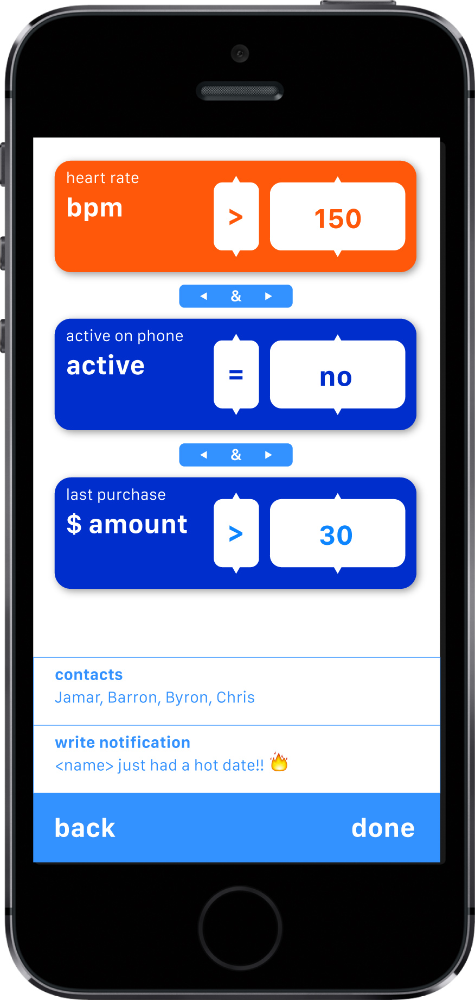
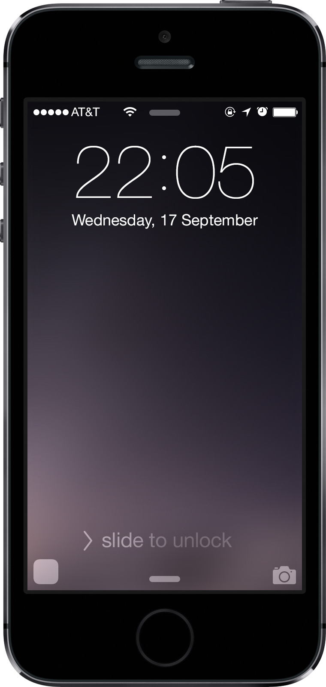
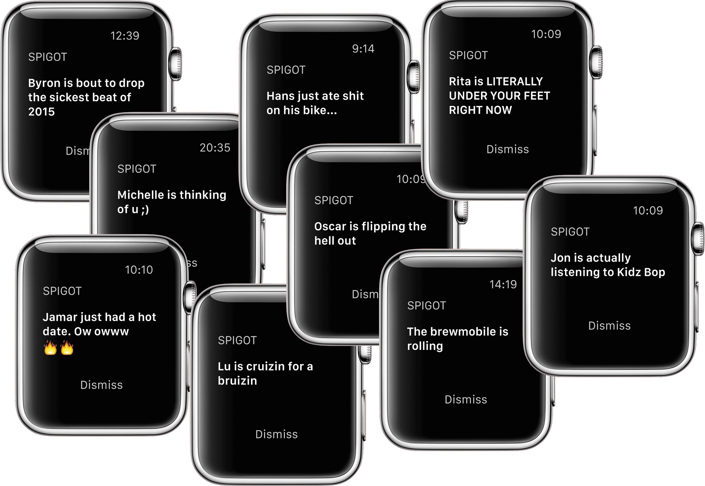

Let devices bring you the info you want from the people you love.
 Set up notifications for when your friends or family enter a specific store, go running on the beach, have a dead phone, or any other imaginable parameter their devices collect.
Need to know when your kid leaves for school? Set a recipe to notify you when his location isn't your house. Want to know when friends are listening to your recommendations? Set a recipe for when their current music is a certain song.
The types of data you can use in your recipes are organized by categories, and contain every kind of data your phone can collect.
You can set notifications to depend on: location, heart rate, phone use, app use, audio, temperature, words typed, gyroscope, phone battery, steps walked, speed, music playing, current activity (running, driving, etc) and many more.
All recipes are on the home screen for easy activation, disactivation, addition or deletion. Turn off all your recipes to go "off the grid" - your data offline when you want it.
Swipe up from here to switch to Deluge mode.
In Deluge mode, get a snapshot of aggregated and anonymous data based on your location. Filter and browse through data to learn more about the crowd around you.
Spigot was developed by Barron Webster, Jamar Bromley and Byron Chow during an incubation period in Computer Utopias at the Rhode Island School of Design.